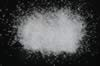

|
|
(For further information on spectroscopy, see:
http://speclab.cr.usgs.gov)
TITLE: Dolomite HS102 DESCRIPT
DOCUMENTATION_FORMAT: MINERAL
SAMPLE_ID: HS102
MINERAL_TYPE: Carbonate
MINERAL: Dolomite (Dolomite group)
FORMULA: CaMg(CO3)2
FORMULA_HTML: CaMg(CO3)2
COLLECTION_LOCALITY: Lee, MA
ORIGINAL_DONOR: Hunt and Salisbury Collection
CURRENT_SAMPLE_LOCATION: USGS Denver Spectroscopy Laboratory
ULTIMATE_SAMPLE_LOCATION: USGS Denver Spectroscopy Laboratory
SAMPLE_DESCRIPTION: .p> Forms series with Ankerite and with Kutnohorite.
"This is a recrystallized dolomitic marble, which displays the carbonate absorption features at longer wavelengths than typical for calcites. Weak absorption band at 1.0µm is due to ferrous iron, which is shown to be present at 0.03 wt.% in the sample."
Hunt, G.R., J.W. Salisbury, 1971, Visible and near-infrared spectra of minerals and rocks: II. Carbonates. Modern Geology, v. 2, p. 23-30.
IMAGE_OF_SAMPLE:

END_SAMPLE_DESCRIPTION.
XRD_ANALYSIS:
Dolomite plus trace of calcite XRD done by Norma Vergo
Clark, R.N., King, T.V.V., Klejwa, M., Swayze, G.A., and Vergo, N., 1990, High spectral resolution reflectance spectroscopy of minerals: Journal of Geophysical Research, v. 95, no. 8B, p 12,653-12,680. END_XRD_ANALYSIS.
COMPOSITIONAL_ANALYSIS_TYPE: None # XRF, EM(WDS), ICP(Trace), WChem
COMPOSITION_TRACE: None
COMPOSITION_DISCUSSION:
END_COMPOSITION_DISCUSSION.
MICROSCOPIC_EXAMINATION:
Bimodal grain size distribution:
population 1: average grain size = 288µm 98 vol%
population 2: average grain size = 15µm 2 vol%
average grain size of all populations: 285µm
Pure sample, sluggish fizz with dilute HCl. Lack of a vigorous fizz suggests very little if any calcite (this HCl mixture reacts vigorously with pure calcite samples). Uniaxial negative, high relief, higher order white, all consistent with dolomite. G. Swayze.
END_MICROSCOPIC_EXAMINATION.
SPECTROSCOPIC_DISCUSSION:
END_SPECTROSCOPIC_DISCUSSION.
SPECTRAL_PURITY: 1b2b3b4b # 1= 0.2-3, 2= 1.5-6, 3= 6-25, 4= 20-150 microns
| LIB_SPECTRA_HED: | where | Wave Range | Av_Rs_Pwr | Comment |
|---|---|---|---|---|
| LIB_SPECTRA: | splib04a r 1462 | 0.2-3.0µm | 200 | g.s.= 285 µm |
| LIB_SPECTRA: | splib05a r 2464 | 0.2-3.0µm | 200 | g.s.= |
| LIB_SPECTRA: | splib06a r 7116 | g.s.= | ||
| LIB_SPECTRA: | splib06a r 7128 | g.s.= |
{kind=link}